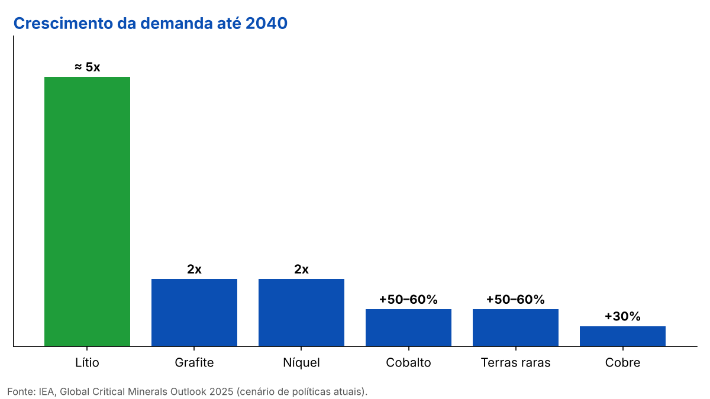
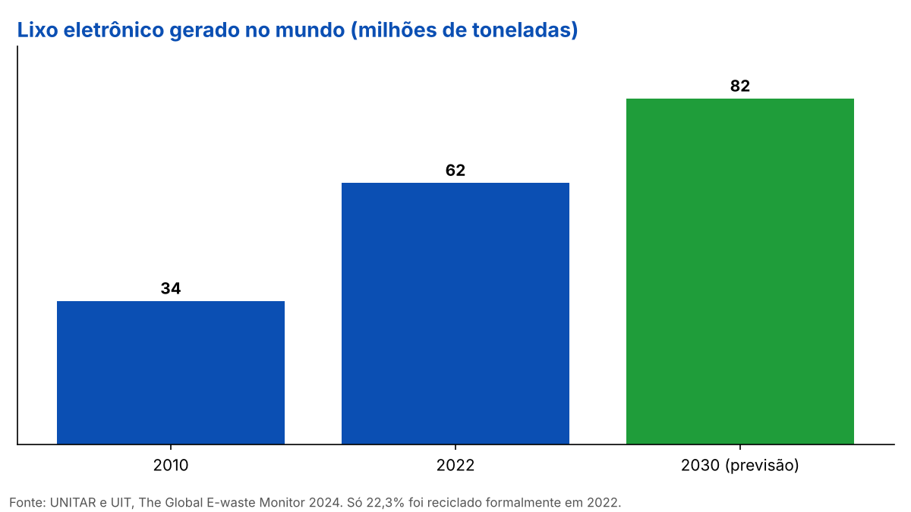
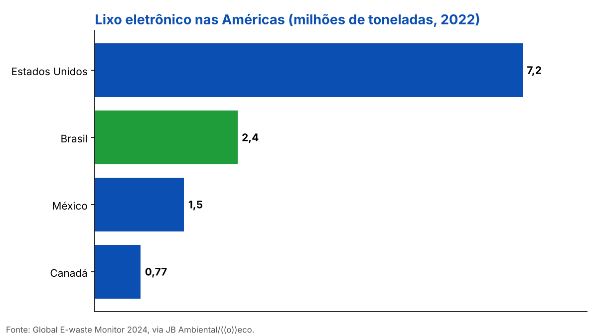

de lixo eletrônico previstos para 2030, contra 62 mi t em 2022
Fonte: UNITAR e UIT, The Global E-waste Monitor (2024). AcessarPesquisas e dados
Os números por trás do projeto. Cada dado traz sua própria fonte logo abaixo.
em recursos recuperáveis do lixo eletrônico não aproveitados em 2022
Fonte: UNITAR e UIT, The Global E-waste Monitor (2024). Acessardo lixo eletrônico brasileiro é reciclado formalmente
Fonte: Brasil de Fato, com dados da Global E-waste Statistics Partnership (2024). AcessarMineração
Celulares e baterias dependem de minérios como lítio, cobalto, níquel e grafite, e a demanda cresce rápido. Segundo a Agência Internacional de Energia (IEA), o consumo de lítio deve ser cerca de cinco vezes maior em 2040 do que hoje, o de grafite e níquel deve dobrar e o de cobalto e terras raras deve subir de 50% a 60%. A extração também é concentrada: em 2024, três países responderam por 77% do lítio extraído no mundo.
Fonte: IEA, Global Critical Minerals Outlook 2025 (2025). Acessar
Lixo eletrônico
O mundo gerou 62 milhões de toneladas de lixo eletrônico em 2022, 82% a mais do que em 2010. Só 22,3% dessa massa foi documentada como coletada e reciclada de forma adequada. A previsão é chegar a 82 milhões de toneladas em 2030, e a taxa de reciclagem pode cair para 20%, porque o lixo eletrônico cresce cerca de cinco vezes mais rápido que a reciclagem.
Fonte: UNITAR e UIT, The Global E-waste Monitor (2024). Acessar
E no Brasil?
O Brasil gerou cerca de 2,4 milhões de toneladas de lixo eletrônico em 2022. É o segundo maior gerador das Américas, atrás só dos Estados Unidos, e estimativas o colocam em quinto lugar no mundo. Apesar do volume, apenas cerca de 3% desse total é reciclado formalmente.
Fonte: JB Ambiental/((o))eco, com dados do Global E-waste Monitor (2024). Acessar